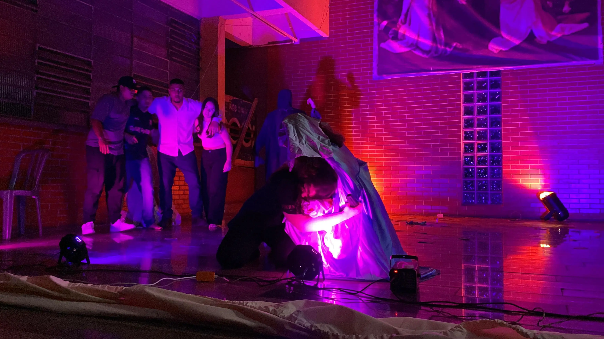
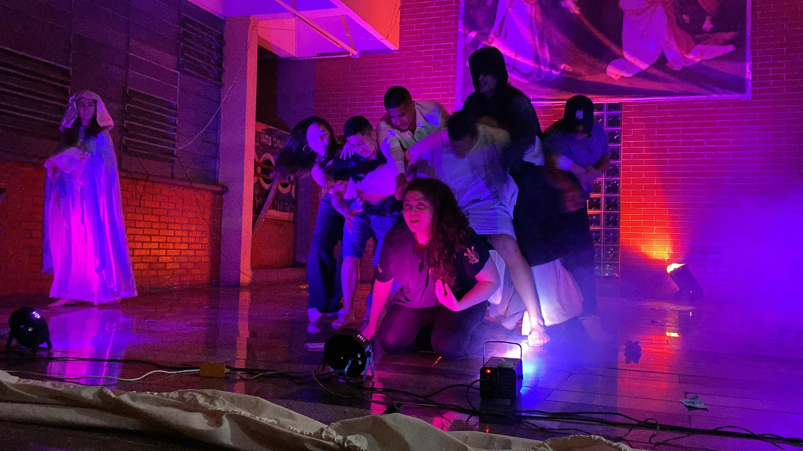
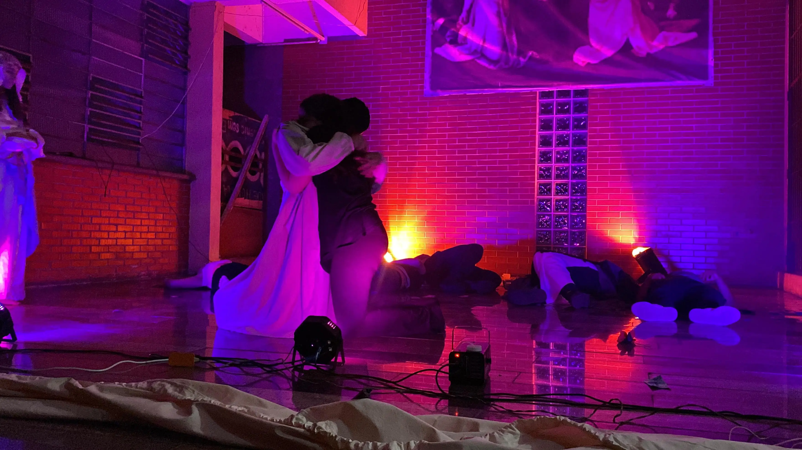
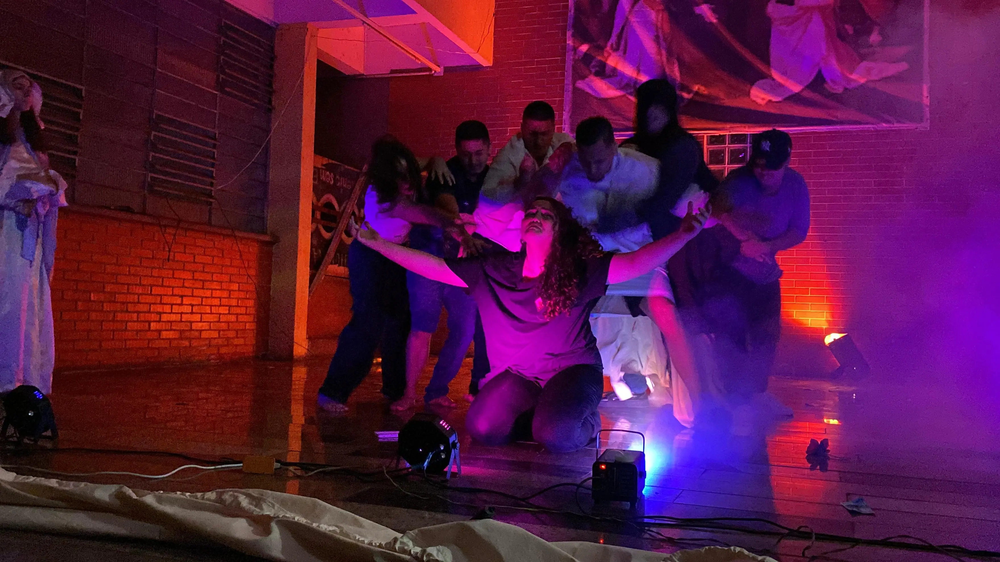

Ensaios LifeHouse
O vídeo mostra o ensaio da peça Lifehouse, com o grupo se preparando para a apresentação na igreja.
Mais um ensaio da peça Lifehouse, com foco na repetição e melhoria das cenas.
Ensaio com ajustes nos detalhes para melhorar a apresentação.
Treinamento das cenas com foco na organização e execução.
Apresentação LifeHouse
Apresentação da peça Lifehouse na igreja com tudo que foi ensaiado.
Execução final da peça com organização e sincronia do grupo.
Fotos LifeHouse

Nesta cena, a personagem é acolhida por Nossa Senhora, que a abraça e a conduz novamente até Jesus, mostrando o caminho de volta. É um momento de amor e intercessão, onde Maria a ajuda a reencontrar a presença de Cristo. Porém, ao tentar correr em direção a Ele, as influências negativas surgem novamente, tentando impedi-la de chegar até Jesus, representando as dificuldades e tentações que aparecem justamente quando decidimos voltar para Deus.

Nesta cena, Jesus se coloca à frente da personagem, enfrentando diretamente as influências negativas que tentam se aproximar dela. Ele age como um verdadeiro defensor, impedindo que o mal avance, mostrando que mesmo quando estamos fracos, Ele luta por nós e nos protege com sua presença.

Aqui acontece um dos momentos mais fortes da apresentação: o abraço entre a personagem e Jesus. Após vencer todas as influências negativas que tentavam afastá-la, Jesus a acolhe novamente com amor. Esse momento representa o perdão, a misericórdia e o recomeço, mostrando que, não importa o quanto alguém se afaste, sempre existe um caminho de volta através do amor de Deus.

Aqui vemos Jesus intervindo mais uma vez, afastando as forças negativas que tentam puxar a personagem para longe. É um momento de vitória e autoridade, onde Ele mostra que é mais forte que qualquer influência, garantindo proteção e segurança para aqueles que se aproximam dEle.